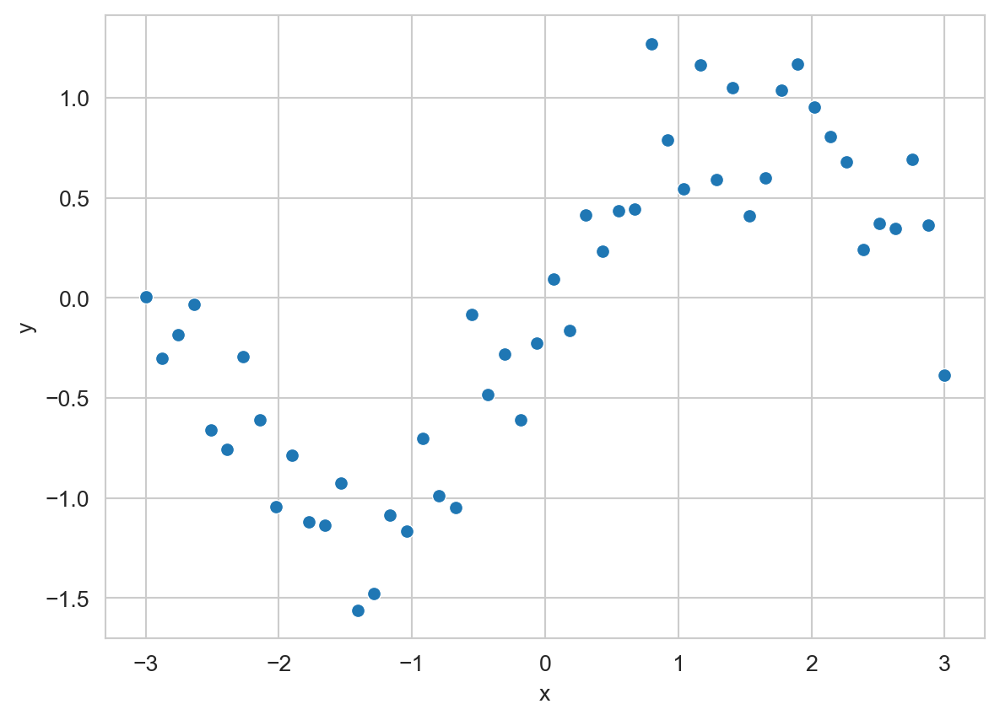
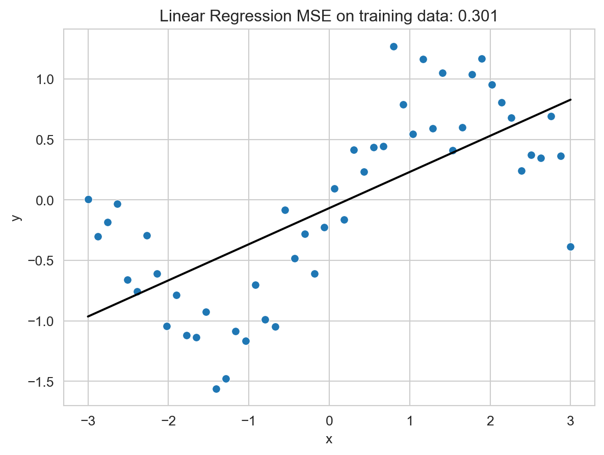
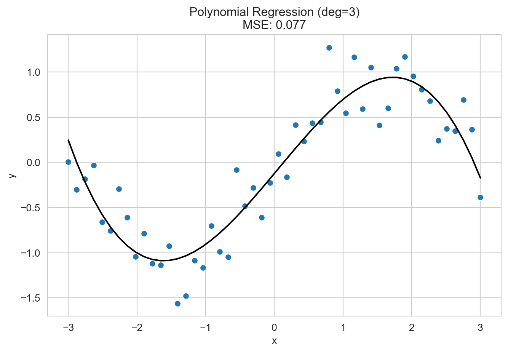
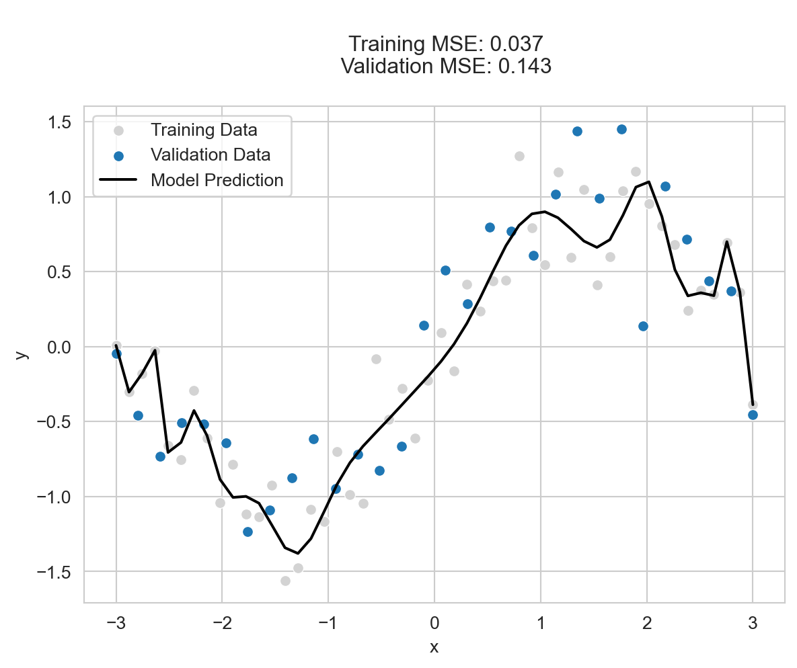
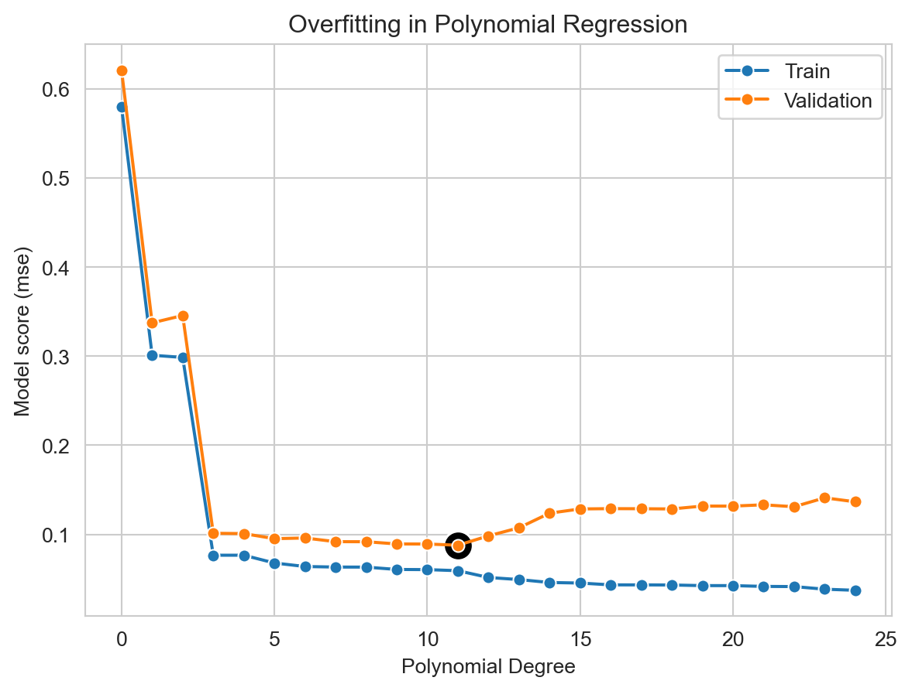
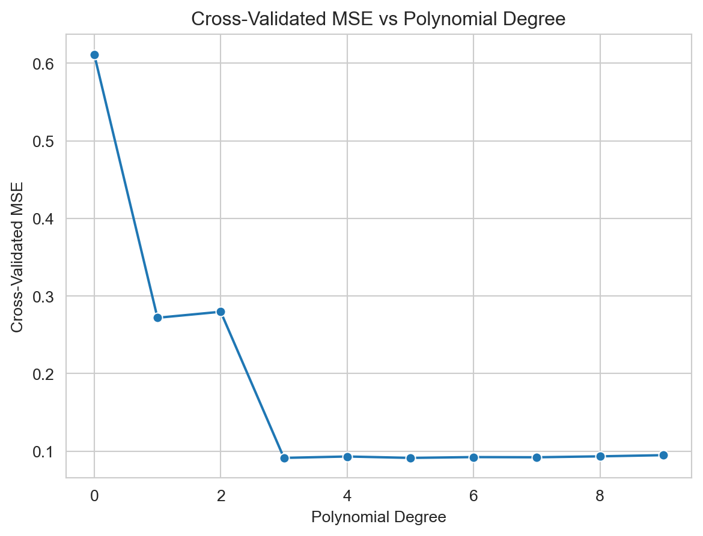
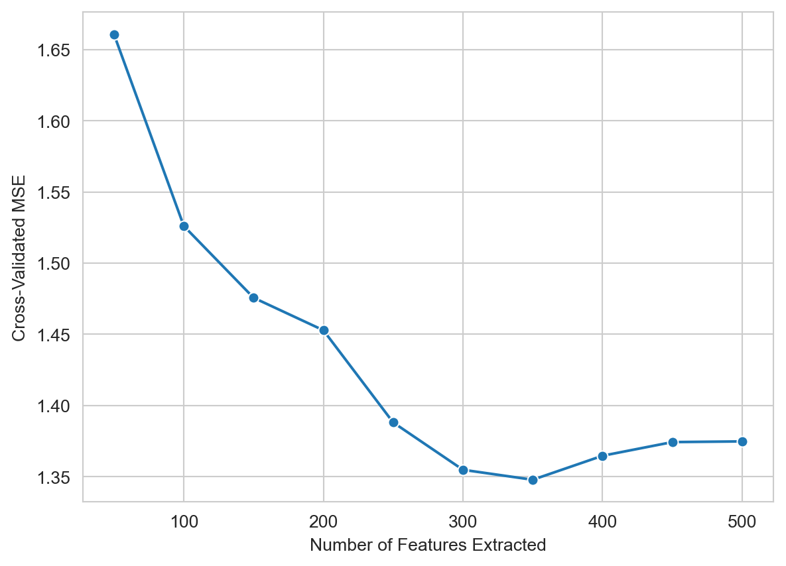

import pandas as pd
from sklearn.linear_model import LinearRegression
import seaborn as sns
import numpy as np
from matplotlib import pyplot as plt
sns.set_style("whitegrid")4 Features and Overfitting
Open the live notebook in Google Colab or download the live notebook
.Last time, we began our study of predictive modeling. We introduced the idea of fitting a model as an optimization problem, in which our aim is to minimize some loss function which measures the error between model predictions and the actual data. We then used this minimization idea to fit a linear regression model to a data set and measure how the fit model reduces the error when compared to a naive baseline model.
However, in most of the systems we might wish to study, the relationship between the features (input) and target (output) is nonlinear. In this set of notes, we’ll consider the problem of modeling nonlinear trends in data. Our approach to this problem will involve engineering many new features, which will in turn lead us to one of the fundamental risks in predictive modeling: overfitting.
Nonlinear Prediction: Feature Maps
To begin, let’s consider some synthetic data. We’ll write a simple function to generate data from a noisy sine wave:
np.random.seed(42)
def sin_data(n_samples=50, noise_std=0.3):
x = np.linspace(-3, 3, n_samples)
y = np.sin(x) + np.random.normal(0, noise_std, n_samples)
return pd.DataFrame({'x': x, 'y': y})The resulting data set looks like this:
df = sin_data()
ax = sns.scatterplot(data=df, x='x', y='y')
If we try to just fit a linear regression model, we’ll be disappointed:
def mse(y, y_pred):
return np.mean((y - y_pred)**2)
X = df[['x']]
y = df['y']
model = LinearRegression()
model.fit(X, y)
y_pred = model.predict(X)
ax = sns.scatterplot(data=df, x='x', y='y')
sns.lineplot(x=df['x'], y=y_pred, color='black', ax =ax)
t = ax.set_title(
f'Linear Regression MSE on training data: {mse(y, y_pred):.3f}'
)
One common paradigm for modeling nonlinear relationships is to engineer new features from the original data. This can be done by applying any nonlinear transformation to the original features. For example, we might define a set of feature maps \(\phi_d:\mathbb{R} \rightarrow \mathbb{R}\) which accept an input \(x\) and raise it to a power: \[ \begin{aligned} \phi_d(x) = x^d\;. \end{aligned} \]
We can define as many of these as we like! Once we’ve computed these features, we can form a linear regression model using the expanded feature set:
\[ \begin{aligned} \hat{y} = w_D\phi_D(x) + w_{D-1}\phi_{D-1}(x) + \cdots + w_1 \phi_1(x) + w_0 \phi_0(x) = \sum_{d=0}^D w_d \phi_d(x)\;. \end{aligned} \]
Note that \(\phi_0(x) = x^0 = 1\), so here \(w_0\) is playing the role of the bias term which we previously labeled \(b\). This combination of linear regression with a polynomial feature map is often called polynomial regression.
scikit-learn gives us a convenient way to implement polynomial regression with two components: the PolynomialFeatures preprocessor, which computes the polynomial features, and the Pipeline class, which allows us to chain together multiple steps (like preprocessing and estimation) into a single model.
from sklearn.pipeline import Pipeline
from sklearn.preprocessing import PolynomialFeatures
def polynomial_regression(deg):
return Pipeline(steps=[
('preprocessor', PolynomialFeatures(degree=deg, include_bias=True)),
('estimator', LinearRegression())
])Here’s an example of polynomial regression in action where \(D = 3\). Note that once we’ve defined or more complicated pipeline model, the fit and predict steps work just as before:
fig, ax = plt.subplots(figsize=(8, 5))
model = polynomial_regression(deg=3)
model.fit(X, y)
y_pred = model.predict(X)
sns.scatterplot(data=df, x='x', y='y', ax = ax)
sns.lineplot(x=df['x'], y=y_pred, color='black', ax =ax)
t = ax.set_title(
f'Polynomial Regression (deg=3)\nMSE: {mse(y, y_pred):.3f}'
)
With the incorporation of polynomial features, we are able to model the nonlinear trend in the data much more effectively.
In this example with 1-dimensional input data, the choice of polynomial degree \(D\) is a hyperparameter which controls how flexible the model is. Larger choices of \(D\) lead to more flexible models which contain more parameters How does our model performance depend on the choice of \(D\)? Let’s take a look at several choices:
In this case, there are \(D+1\) parameters to fit.
fig, ax = plt.subplots(2, 3, figsize=(6,4))
degs = [1, 3, 5, 10, 15, 20]
for i, deg in enumerate(degs):
model = polynomial_regression(deg=deg)
model.fit(X, y)
y_pred = model.predict(X)
axis = ax[i//3, i%3]
sns.scatterplot(data=df, x='x', y='y', ax = axis)
sns.lineplot(x=df['x'], y=y_pred, color='black', ax =axis)
axis.set_title(
f'Polynomial regression (deg={deg})\nMSE: {mse(y, y_pred):.3f}'
)
t = plt.tight_layout()
As \(D\) increases, we see that the model becomes more flexible and is able to fit the training data more closely. However, this flexibility comes at a cost: as \(D\) increases, the model begins to fit the noise in the data rather than the underlying trend, as reflected by the visual jags and wobbles.
This general phenomenon of fitting noise rather than signal is called overfitting. The trouble with overfitting is not that the model fits the training data poorly – in fact, overfitted models often have very low training error – but rather that they generalize poorly to new data. To see this, let’s generate some new test data from the same process:
df_val = sin_data(n_samples=30, noise_std=0.3)
X_val = df_val[['x']]
y_val = df_val['y']
# create a model and fit it on the same features
model = polynomial_regression(deg=25)
model.fit(X, y)
y_pred = model.predict(X)
sns.scatterplot(data=df, x='x', y='y', label='Training Data', color = "lightgrey")
sns.scatterplot(data=df_val, x='x', y='y', label='Validation Data')
sns.lineplot(x=df['x'], y=y_pred, color='black', label='Model Prediction')
t = plt.title(
f"""
Training MSE: {mse(y, model.predict(X)):.3f}
Validation MSE: {mse(y_val, model.predict(X_val)):.3f}
"""
)
Visually, we can see that the model we’ve learned fits some of the noise in the training data, at the expense of a good fit on the test data.
One way to view the problem of overfitting is that in an overfit model, the training error is no longer a reliable guide to performance on new, unseen data. In the above example, we see that while the training MSE is very low, the validation MSE is much higher.
We can see where the training and validation MSE begin to diverge by systematically varying the polynomial degree and measuring both errors:
max_deg = 25
degs = np.arange(0, max_deg)
train_mses = []
validation_mses = []
for deg in range(0, max_deg):
model = polynomial_regression(deg=deg)
model.fit(X, y)
y_train_pred = model.predict(X)
y_val_pred = model.predict(X_val)
mse_train = mse(y, y_train_pred)
mse_val = mse(y_val, y_val_pred)
train_mses.append(mse_train)
validation_mses.append(mse_val)
sns.lineplot(x=degs, y=train_mses, marker='o', label='Train')
sns.lineplot(x=degs, y=validation_mses, marker='o', label='Validation')
best_deg = np.argmin(validation_mses)
sns.scatterplot(x=[best_deg],
y=[validation_mses[best_deg]],
color='black',
s=200)
plt.xlabel('Polynomial Degree')
plt.ylabel('Model score (mse)')
plt.title('Overfitting in Polynomial Regression')
l = plt.legend()
In this data set, the best model (as measured by performance on unseen data) occurs with polynomial degree 11.
Cross-Validation and Model Evaluation
When we’re studying real data, we don’t usually have the opportunity to independently generate a separate validation set on which to assess our models. Instead, what we usually do is split the data we have. The typical workflow is:
- Hold out a piece of the data which we won’t touch until the very end of our analysis, when we are ready to perform a final evaluation of our model. This is called the test set.
- Use the remaining data, called the training set, to fit models and perform model selection. This is where we will be tuning hyperparameters like polynomial degree.
- Along the way, we’ll often want to assess how well our models are doing on unseen data. To do this, we can withold a portion of the training data to use as a validation set.
To practice this loop, let’s first generate a slightly larger data set from the same process.
df = sin_data(n_samples=200, noise_std=0.3)
X = df[['x']]
y = df['y']Next, we’ll split the data into training and test sets. We’ll hold out 20% of the data for testing, and use the remaining 80% for training.
from sklearn.model_selection import train_test_split
X_train, X_test, y_train, y_test = train_test_split(X, y, test_size=0.2, random_state=123)We won’t touch either X_test or y_test until the very end of our analysis, when we are ready to perform a final evaluation of our model.
Simulating Evaluation: Cross-Validation
The idea of cross-validation is that we can simulate the process of evaluating our model on unseen data by witholding parts of our training data to use as testing. In order to make an assessment, we can simulate the process of fitting the model and evaluating on “test” data by witholding parts of our training data to use as testing. We split the data into chunks and withold each chunk, using the other chunks to train the data. This is called cross-validation, and it is illustrated in this figure:
Vanderplas (2016) has more on cross-validation and overfitting. We’ll confront overfitting agian many times in this course.

We could do this with a for-loop, but the scikit-learn developers have implemented this for us. Here’s an example of cross-validation with 5 folds. This can take a little while, as there are actually 5 calls to model.fit() happening under the hood each time.
from sklearn.model_selection import cross_val_score
model = polynomial_regression(deg=3)
scores = cross_val_score(
model,
X_train,
y_train,
cv=10,
scoring = "neg_mean_squared_error")
print(f"MSEs for each fold: {np.array2string(-scores, precision=3)}")
print(f"The mean MSE from cross-validation is {-scores.mean():.3f}")MSEs for each fold: [0.091 0.069 0.087 0.089 0.098 0.064 0.134 0.102 0.097 0.082]
The mean MSE from cross-validation is 0.091If we wrap this in a loop, we can see how the cross-validated MSE changes as we vary the polynomial degree:
cv_scores = []
degrees = np.arange(0, 10)
for deg in degrees:
deg_scores = cross_val_score(
polynomial_regression(deg=deg),
X_train,
y_train,
cv=10,
scoring = lambda model, X_, y_: mse(y_, model.predict(X_))
)
cv_scores.append(deg_scores.mean())
ax = sns.lineplot(x=np.arange(0, len(cv_scores)), y=cv_scores, marker='o')
ax.set_xlabel('Polynomial Degree')
ax.set_ylabel('Cross-Validated MSE')
t = ax.set_title('Cross-Validated MSE vs Polynomial Degree')
best_deg = degrees[np.argmin(cv_scores)]
print(f"The best degree is {best_deg} with CV MSE of {min(cv_scores):.3f}")The best degree is 5 with CV MSE of 0.091
Having repeated model fitting and assessment over many different splits of the data, we can be more confident that our assessment of model performance reflects what we’d observe on unseen data, and that our choice of the degree hyperparameter is likely to perform well in predictive practice.
Unstructured Data: Feature Extraction
In the previous example, we began with data with a single feature \(x\), and then generated many new features \(\{\phi_d(x)\}\) from it in order to model nonlinear patterns. This process is sometimes called feature engineering. Another way we sometimes work with features is called feature extraction, which most commonly appears when working with unstructured data like text or images. Here’s an example of a data set containing Yelp reviews, along with a label giving the number of stars (1-5, represented in Python as 0 through 4) assigned by the reviewer:
“Feature extraction” and “feature engineering” are often used interchangeably, and the difference between them can blur in pratice.
url = "https://raw.githubusercontent.com/PhilChodrow/ml-notes/refs/heads/main/data/yelp-reviews/reviews-subset.csv"
df = pd.read_csv(url)
df.head()| label | text | |
|---|---|---|
| 0 | 2 | GF and I tried today at lunch. As expected a n... |
| 1 | 0 | Chicken Tacos where good. Chips and guacamol... |
| 2 | 2 | Things I liked about Graze:\n1. The elderflowe... |
| 3 | 3 | Michael Mina makes any restaurant sound intere... |
| 4 | 2 | I was let down by yelp. As someone that trave... |
We’d like to try predicting the label from the review text. To develop a model, let’s first perform a train-test split:
X_train, X_test, y_train, y_test = train_test_split(df['text'], df['label'], test_size=0.2)In order to work with these data, we need to somehow represent the text through a set of numeric features. One way to approach this is to create a column for each of a set of words which we think might be meaningful. For example, words like “good” or “amazing” are likely associated to high-scoring reviews, while words like “awful” or “boring” may be associated with low-scoring reviews.
For much more on how to use machine learning and other computational tools to study human language, take a course in natural language processing!
Here’s an example in which we represent each of the reviews using 400 of the most common words in the training set. We can use a built-in tool from scikit-learn called CountVectorizer to do this for us:
Writing this kind of tool by hand is a good exercise in Python programming and string manipulation!
from sklearn.feature_extraction.text import CountVectorizer
# Create a CountVectorizer to convert text to term-document matrix
vectorizer = CountVectorizer(max_features=400, stop_words='english')
vectorizer.fit(X_train)
# now we can construct the term-document matrix
X_train_vec = pd.DataFrame(vectorizer.transform(X_train).toarray(), columns=vectorizer.get_feature_names_out())Here’s an excerpt with a few columns and rows from our training data:
X_train_vec[["good", "bad", "best", "bland", "delicious"]].head()| good | bad | best | bland | delicious | |
|---|---|---|---|---|---|
| 0 | 1 | 0 | 0 | 0 | 0 |
| 1 | 0 | 0 | 0 | 0 | 0 |
| 2 | 0 | 0 | 0 | 1 | 0 |
| 3 | 0 | 0 | 0 | 0 | 0 |
| 4 | 0 | 0 | 0 | 0 | 0 |
Does this kind of information help us predict the review score? Let’s try fitting a linear regression model to see:
LR = LinearRegression()
model = LR.fit(X_train_vec, y_train)
print("Training MSE:", mse(y_train, model.predict(X_train_vec)))Training MSE: 1.0818071327467624As a comparison, if we used a simple constant predictor equal to the mean of the training labels, the MSE would be np.float64(2.0662044374999997). The MSE we obtain from our linear model is much lower than this baseline MSE – looks promising!
Before we try evaluating our model, we should ask: was 400 really the right number of features to extract? Just as in the case of the polynomial regression model, we can (given enough computational power) approach this question using a systematic sweep over possibilities and cross-validation:
score_vec = []
possible_num_features = 50*np.arange(1, 11)
for num_features in possible_num_features:
vectorizer = CountVectorizer(max_features=num_features, stop_words='english')
vectorizer.fit(X_train)
# construct the term-document matrix
X_train_vec = pd.DataFrame(vectorizer.transform(X_train).toarray(), columns=vectorizer.get_feature_names_out())
LR = LinearRegression()
scores = cross_val_score(
LR,
X_train_vec,
y_train,
cv=10,
scoring='neg_mean_squared_error'
)
score_vec.append(-scores.mean())
ax = sns.lineplot(x=possible_num_features, y=score_vec, marker='o')
ax.set_xlabel('Number of Features Extracted')
y = ax.set_ylabel('Cross-Validated MSE')
It looks like we might actually do a bit better with around 350 features. Let’s try that and finally evaluate on the test set:
best_num_features = possible_num_features[np.argmin(score_vec)]
vectorizer = CountVectorizer(max_features=best_num_features, stop_words='english')
vectorizer.fit(X_train)
# construct the term-document matrix
X_train_vec = pd.DataFrame(vectorizer.transform(X_train).toarray(), columns=vectorizer.get_feature_names_out())
X_test_vec = pd.DataFrame(vectorizer.transform(X_test).toarray(), columns=vectorizer.get_feature_names_out())
LR = LinearRegression()
LR.fit(X_train_vec, y_train)
mse_test = mse(LR.predict(X_test_vec), y_test)
print(f"The test MSE is {mse_test:.2f}")
print(f"The baseline constant model MSE is {mse(y_test, y_train.mean()):.2f}")The test MSE is 1.24
The baseline constant model MSE is 2.04Through cross-validation, we’ve selected an informed guess for the model which will perform best on unseen future data.
Interpreting Features
What words are predictive of a good review? We can get some insight on this from the coefficients of the linear model, one of which is associated to each word. First we’ll gather the coefficients into a data frame:
feature_coefficients = pd.DataFrame({
'feature': X_train_vec.columns,
'coefficient': LR.coef_
})Then we’ll look at the entries of the data frame with the highest and lowest coefficients:
# good review indicators
feature_coefficients.sort_values(by='coefficient', ascending=False).head(5)| feature | coefficient | |
|---|---|---|
| 96 | excellent | 0.623757 |
| 9 | amazing | 0.517411 |
| 18 | awesome | 0.481500 |
| 24 | best | 0.426713 |
| 71 | delicious | 0.393222 |
# bad review indicators
feature_coefficients.sort_values(by='coefficient', ascending=True).head(5)| feature | coefficient | |
|---|---|---|
| 302 | terrible | -0.657938 |
| 144 | horrible | -0.644740 |
| 342 | worst | -0.550828 |
| 256 | rude | -0.463192 |
| 78 | disappointed | -0.375171 |
It appears our model has learned some reasonable associations about which words correspond to well-scored reviews, although much could be done to improve performance here.
References
Vanderplas, Jacob T. 2016. Python Data Science Handbook: Essential Tools for Working with Data. First edition. Sebastopol, CA: O’Reilly Media, Inc.
© Michael Linderman and Phil Chodrow, 2025